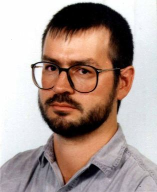

http://www.kgw.tu-berlin.de/~abart/index.html
abart@berlin.netsurf.de
Andre Bartetzki was born in Berlin, Germany, in 1962. He worked in several
recording studios before he studied Tonmeister at the Hochschule fuer Musik
Berlin. As assistant of Prof. York Hoeller he has set up the Studio fuer
elektroakustische Musik at the Musikhochschule, where he currently works as
Tonmeister, programmer and lecturer in acoustics, sound synthesis, algorithmic
composition and electroacoustic music.
Andre Bartetzki
STEAM - Studio fuer elektroakustische Musik
Hochschule fuer Musik Berlin
Charlottenstrasse 55
10117 Berlin
Germany